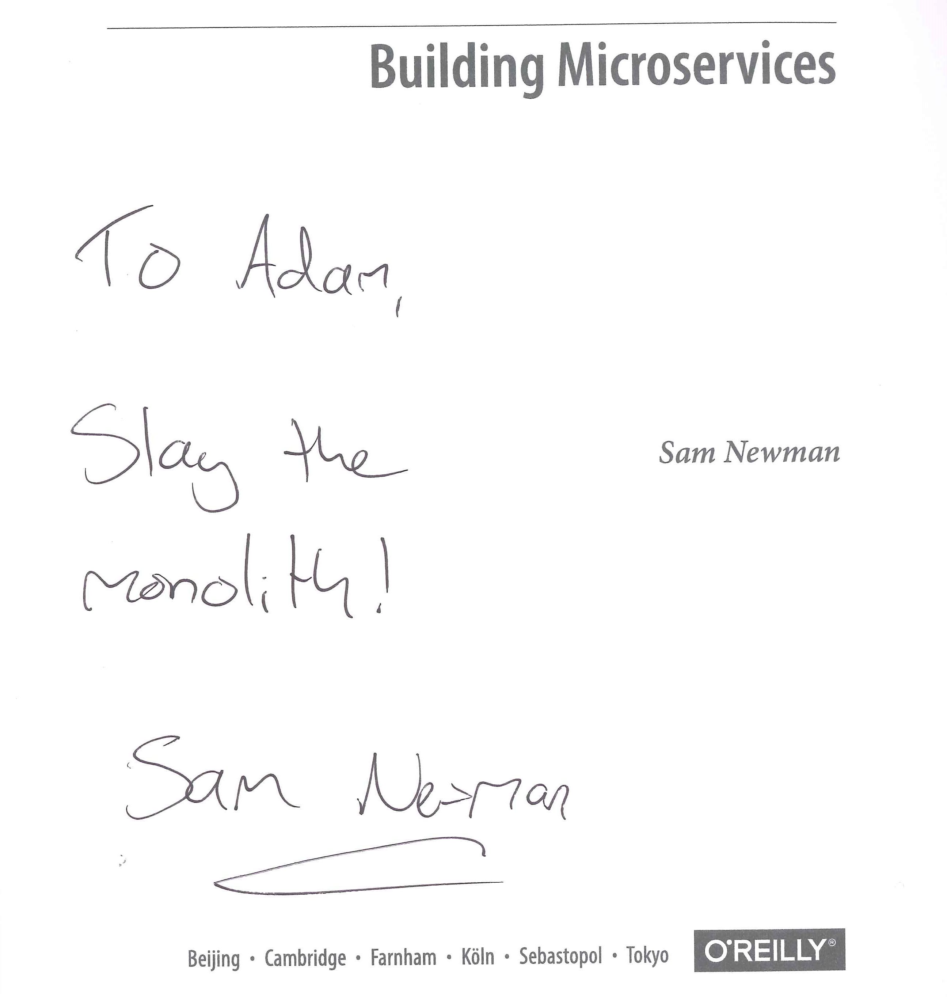
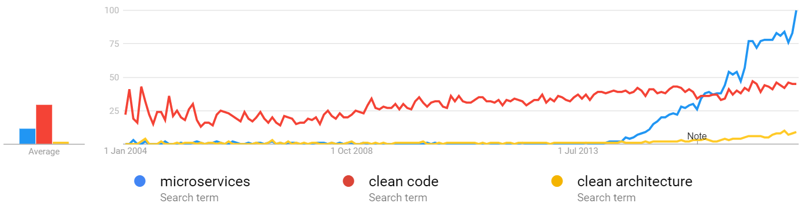
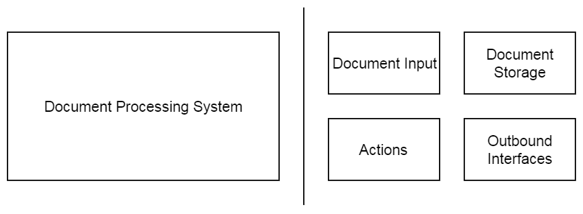

<easy>
Slay the Monolyth!
microservices simple and easy right?
</easy>goo.gl/Api8dX

Do You remember the times when You where a student?
I had one Dream
Source
A new project!
The Dream Comes true!
Project specs:
|
Microservices Hype

Source
It is starting to get messy
Source
But why?
| Java Case | Tablet Case | Microservices Case |
That is not enough!
Inspiration